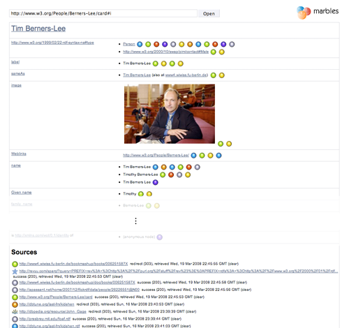

A full details view of Beijing Capital Airport that includes data from DBpedia, GeoNames and the flickr wrappr.
A full details view of Tim Berners-Lee's FOAF profile with data sources indicated using "marbles"
Marbles is a server-side application that formats Semantic Web content for XHTML clients using Fresnel lenses and formats. Colored dots are used to correlate the origin of displayed data with a list of data sources, hence the name.
By performing all formatting, data retrieval and storage activities on the server side rather than on a potentially thinly equipped client, the view generation can touch on large amounts of data and requests can be answered relatively quickly. Marbles provides display and database capabilities for DBpedia Mobile.
Try it out!
A public installation of Marbles is located at http://www5.wiwiss.fu-berlin.de/marbles/. Use the following form to start browsing with it.
News
- 2009/05/28: Initial release on SourceForge.
Contents
1. Concepts
Views
Apart from a full details view that lists all known properties for resource, Marbles allows for the generation of Fresnel-based views that are complemented by corresponding CSS stylesheets.
There are currently two views in use, which were designed for DBpedia Mobile:
- The summary view features a short text describing the resource and optionally an image, a link to the resource's foaf:homepage and reviews from the Revyu rating site if existent.
- The photo view provides photos for a given resource. These are often provided by DBpedia, FOAF data, or the flickr wrappr.
Data Retrieval
Data is retrieved from multiple sources and integrated into a single graph that is persisted across user sessions. When provided with the URI of a resource to display, Marbles tries to dereference it. In parallel, it queries Sindice and Falcons for datasources that contain information about the given resource, and Revyu for reviews. In a similar manner as the Semantic Web Client Library, Marbles follows specific predicates found in retrieved data such as owl:sameAs and rdfs:seeAlso in order to gain more information about a resource and to obtain human-friendly resource labels.
2. Endpoint Services
SPARQL
Marbles can act as a SPARQL Endpoint and supports the SELECT, CONSTRUCT and DESCRIBE forms. The endpoint URL is provided by the marbles servlet. The public service is http://www5.wiwiss.fu-berlin.de/marbles.
REST
The endpoint service supports the following commands via HTTP GET or POST:
view
Discovers an URI (see below) and renders a given view.
Parameters:
- do = view
- uri = The URI of interest (urlencoded)
- purpose = abstractPurpose | defaultPurpose | photoPurpose (optional)
- lang = ISO language code (optional, defaults to en)
discover
Tries to dereference the URI and queries Sindice, Falcons and Revyu for data; then follows known predicates.
Parameters:
- do = discover
- uri = The URI of interest (urlencoded)
load
(Re)loads an URL into the cache
Parameters:
- do = load
- url = The URL to load (urlencoded)
clear
Removes an URL from the cache
Parameters:
- do = clear
- url = The URL to remove (urlencoded)
3. Installation and Configuration
This section explains how to set up a local copy of Marbles. If you just want to use Marbles, the public endpoint will be around for a while.
Obtaining Marbles
Obtain the .war distribution in the SourceForge project download area and place it into a J2EE web container, such as Tomcat. Marbles should automatically get installed. Alternatively, you can invoke the ant install and remove tasks on the source distribution. Here's how to set up ant to do this.
The Marbles servlet can then be invoked at the directory root, e.g. http://localhost:8080/marbles-1.0/, or /<installation path>/marbles for pre-2.4 servlet containers.
Security policy
When running in a servlet container with active security restrictions, Marbles must be granted rights to:
- write and delete access to the RDF stores, which are located under WEB-INF/data/stores by default
- outgoing TCP communication with the world (connect and resolve)
- reading of properties info.aduna.*, org.openrdf.* and org.xml.sax.driver
A sample policy file is provided in marbles.policy, which would be placed under conf/policy.d in a Tomcat setup. Consider disabling security settings if things don't work right from the start.
Database setup
Marbles has three RDF stores:
- A cache store, which holds data retrieved from the Semantic Web
- A metadata store, which holds information about the data present in the cache, such as date and time as well as headers
- An ontology store, which contains vocabularies placed under the WEB-INF/data/ontologies directory
By default, all stores are automatically created as file-based stores under the WEB-INF/data/stores directory. For performance reasons, it is recommended to place the cache store in a MySQL-based RDBMS store by supplying appropriate login information in web.xml (see Configuration).
MySQL's wait_timeout should be set sufficiently high to prevent disconnection when the server is idle (this value defaults to 8 hours). Marbles also profits from a high key_buffer value. marbles.cnf contains a recommended configuration for a machine with 1 GB RAM, which may be placed into /etc/mysql/conf.d.
Note that for better performance, automatic purging of the database was disabled as it occurs randomly and blocks all writes for a long period. If required, the database should simply be dropped as a whole, along with the metadata store.
Configuration
Marbles is configured using the servlet configuration file WEB-INF/web.xml, which is found in the extracted application container after installation. The default values allow Marbles to work "out of the box", but the settings need to be changed to set up a MySQL-based store etc.
| Field | Description | Default value |
|---|---|---|
| dataProviders | Data Providers to activate | de.fuberlin.wiwiss.marbles.dataproviders.RevyuProvider, de.fuberlin.wiwiss.marbles.dataproviders.SindiceProvider, de.fuberlin.wiwiss.marbles.dataproviders.FalconsProvider |
| dataRoot | Path to data directory with subdirectories for fresnel configuration (fresnel), built-in ontologies (ontologies) and XSLT transformations (xsl), absolute or relative to the Marbles installation directory | WEB-INF/data |
| ontologyStore | Path for native store that holds built-in ontologies | WEB-INF/data/stores/ontologies |
| cacheStore | Path for native store that holds cached data (when MySQL database is not used) | WEB-INF/data/stores/cache |
| metadataStore | Path for native store that holds metadata | WEB-INF/data/stores/metadata |
| assetsURL | Full HTTP path to assets in the web directory; specify if reverse-proxied | (empty), e.g. http://localhost:8080/marbles-1.0/ |
| serviceURL | HTTP URL of this service, specify if reverse-proxied | (empty), e.g. http://localhost:8080/marbles-1.0/ |
| spongerServiceURL | Optional: HTTP URL of Virtuoso Sponger service to be used for further RDF Extraction | e.g. http://localhost:8890/proxy |
| mysqlServer | Optional: MySQL host | e.g. 127.0.0.1 |
| mysqlDb | Optional: MySQL database | e.g. marbles |
| mysqlUser | Optional: MySQL user | e.g. root |
| mysqlPass | Optional: MySQL password | e.g. (empty) |
Integrating into existing URL namespaces
In order to integrate Marbles into an existing URL namespace that is served by an Apache HTTP Server, a redirection may be set up using mod_rewrite with mod_proxy enabled. The following shows an exemplary mod_rewrite configuration block inside a virtual host configuration:
RewriteEngine on
RewriteRule ^/marbles(/(.*))? http://localhost:8080/marbles-1.0/$2 [P]
The Marbles assetsURL and serviceURL settings should be set to reflect the new paths, as these will be sent in the HTML output.
Custom Ontologies
The SIMILE Fresnel Engine supports labels specified using rdfs:label and dc:title for vocabulary items. To incorporate labels for custom ontologies, place those them the directory <data>/ontologies. Ontologies are added into the ontologies store upon servlet initialization.
4. Sourcecode
The source code is available in the SourceForge project download area or via SVN. JavaDoc is provided here.
5. Credits
Marbles uses the following components:
- Sesame 2.1 with MySQL Storage for the browser's data model and storage of cached data; tweaked to support inference
- SIMILE Fresnel Engine and IsaViz FSL; both were tweaked to support provenance and performant access to large graphs.
- SAXON XSLT and XQuery Processor to generate XHTML representations of the rendered Fresnel trees
- The dereferencer is partially based on the Semantic Web Client Library and makes use of the Apache Commons HTTP Client for optimized retrieval
The open-sourcing of Marbles was supported in part by a research grant from Eli Lilly and Company.
Hosted on SourceForge
6. References
Christian Becker, Christian Bizer: DBpedia Mobile: A Location-Enabled Linked Data Browser. 1st Workshop about Linked Data on the Web (LDOW2008), Beijing, China, April 2008.  Paper Slides
Paper Slides
7. Feedback
We are very interested in hearing your opinion about this service. Please send comments to Christian Becker and Chris Bizer.
Further information about our work in the area of the Semantic Web/Web-of-Data can be found at
List of our other open source projects @ Freie Universität Berlin